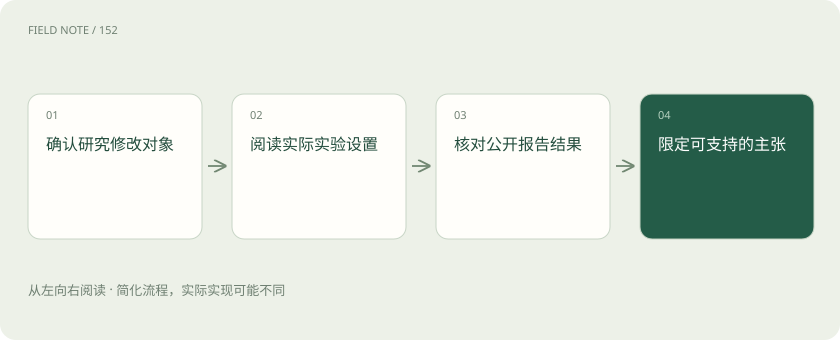
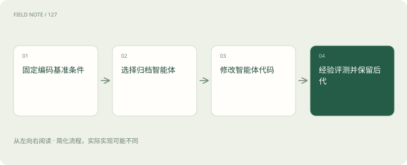

先读哪些知识
先用一个类比理解
类比只帮助建立直觉，不等同于技术的完整机制。
一图看懂

先用同一组问题阅读案例
比较研究时，先问被修改的对象、生成候选的主体、评价信号和固定条件。这样可以防止把程序优化、智能体自改与模型训练混成同一种成果。以下案例展示相关机制，不代表完整自主递归自我改进已经实现。具体跑分会受论文版本、模型、任务子集和计算预算影响，因此理解机制比脱离设置引用单个数字更有价值。
还需要分开系统作者的解释与独立测量。作者可能用“开放式”描述搜索结构，但有限轮次实验只能展示已运行的轨迹。阅读时可以先画出人为固定的边界，再标记自动完成的步骤；自动化比例高并不消除这些边界，也不能替代跨任务和跨资源的复验。
AlphaEvolve 的基本位置
DeepMind 将 AlphaEvolve 描述为结合 Gemini 与自动评估的进化式编码系统，用来寻找更好的算法。这里的重要关系是模型提出程序变化，评估器反馈实际效果，系统利用结果继续搜索。被优化的算法可能用于数学或计算基础设施，但目标程序变得更好，并不能直接证明生成候选的模型权重或智能体改进能力也同步提高。
可把它理解为有实验台的算法设计团队：生成器不断提出方案，实验台决定方案是否有效。实验台本身的可靠性尤其关键。如果运行速度的计量受到缓存或硬件变化影响，搜索会追逐测量噪声。目标程序的收益也可能只适用于某类输入分布，需要在部署数据上另行确认。
可验证任务为什么适合搜索
当候选可以通过明确程序检查正确性与性能时，大量失败方案能被低成本筛除。例如优化资源分配规则，先检查是否违反容量约束，再比较资源使用率。现实问题往往没有这样完整的评估器，质量、社会影响和长期副作用也难以压缩成一个分数。可执行验证带来的成功经验，不能无条件迁移到开放式决策或缺少真实反馈的任务。
例如容量约束可以逐项检查，但员工负担是否公平可能只用一个粗糙代理指标表示。进化搜索会集中利用代理指标留下的空间，最后得到形式合格却难以接受的排班。把额外业务约束写入评估器后，原先冠军可能失去优势，这说明结果依赖目标定义。
图解：DGM 的智能体代码自改

DGM 把智能体程序作为对象
Darwin Gödel Machine 论文研究智能体修改自身代码并用编码基准进行经验验证。它维护多个智能体版本的归档，从中选择父代并生成新版本，因此改动对象更接近解决任务的系统本身。论文支持的是特定实验设置中的自修改与能力提升，基础模型、评测设计和实验环境仍构成外部条件，不能从名称推断存在数学证明式的永久改善保证。
需要特别区分经验验证与理论证明：通过一组编码测试意味着这些测试观察到改善，不意味着未来所有任务都受益。若自改增加了某种工具调用策略，应该检查它在不同错误类型和长任务上是否仍然有效。对基础模型保持固定的实验，也不应被描述为模型自主训练自身权重。
该论文当前 v3 修订日期为 2026-03-12；摘要报告其特定实验设置下 SWE-bench 从 20.0% 提升至 50.0%，Polyglot 从 14.2% 提升至 30.7%。这是两个不同编码基准各自的前后比较，不能把百分比跨基准合并，也不能推断所有软件任务都达到相同效果。论文同时说明实验采用沙箱和人工监督等措施。
开放归档提供踏脚石
DGM 的归档思想允许从不同历史版本继续探索，而不是每次只沿当前冠军前进。这有助于保留暂时不占优但可能有后续价值的工具机制。这样的搜索也扩大了比较次数和累计成本，故需要记录全部尝试。判断收益时应同时查看消融基线、任务范围和资源分配，不能将归档规模或进化轮数本身当作能力持续增长的证据。
踏脚石的价值可以通过消融检验：在相近预算下，比较只保留冠军与保留多样归档的搜索表现。若归档方法花费更多执行机会，则需要同时展示资源曲线。某一分支最终成功，不能证明所有保留分支都有价值，也不能证明归档可以无限扩张而无管理成本。
OpenEvolve 是可检验的工程框架
OpenEvolve 仓库提供开源的程序进化实现，项目自述受 AlphaEvolve 启发，是独立开源项目，并非 Google 官方实现。使用者可以配置模型、待优化程序和评价逻辑，这让搜索循环更容易复用。开源可运行并不意味着复现了 DeepMind 的全部实验条件，也不保证任何输入任务都会获益。仓库会持续变化，实际复现实验应固定提交版本、依赖、模型与数据，而非仅写项目名称。
对于复现者，最重要的产物不是一次终端截图，而是固定版本的配置、评价器、初始程序、随机种子和全部候选日志。不同模型接口可能改变输出格式与失败率，依赖更新也可能改变测量结果。只有这些条件可恢复，其他团队才可能判断差异来自方法还是环境。
三个案例的证据层级
AlphaEvolve 与 OpenEvolve 主要帮助理解由外部评价驱动的目标程序搜索，DGM 更直接涉及智能体程序的自修改。它们都不能凭一次基准改善证明无限递归。若要进一步声称改进器变强，需要让不同代智能体在相同起点与预算下独立开展新的改进任务，比较产生有效后代的能力，而不是仅复用已经搜索到的优秀答案。
进一步可以设置两类迁移任务：更换目标程序但维持同类问题，及更换问题类别。前者检验局部方法是否通用，后者检验改进能力是否越过原始任务范围。若只有第一类有效，应将结论限定在该程序家族，不能使用笼统的“自我进化能力全面增强”。
图解：OpenEvolve 复现记录清单
把研究结果转换为可用判断
企业可以先选择约束明确、结果能复核的内部任务开展离线实验，如历史排班策略比较。先冻结历史数据，再验证候选能否在新时段保持收益，最后考虑准入。Anthropic 的文章适合补充自主研发闭环的概念和未解问题，其愿景与趋势判断不属于上述系统已达成强 RSI 的实验证据，也不能被用来给通用智能安排确定日期。
试点结束时应形成三份清单：已在独立数据上成立的收益、依赖人工环节的能力，以及尚未验证的推断。若一个团队仍需要人工调整评估器或排查失败，这些贡献应计入成本。研究启发可以帮助选择实验方向，但生产替换仍需业务约束与恢复能力的证据。
放在一起对比
| 研究或项目 | 主要修改对象 | 公开机制或证据 | 不能推出的结论 |
|---|---|---|---|
| AlphaEvolve | 算法与目标程序 | 自动评价驱动搜索 | 不证明基础模型自训练 |
| DGM | 智能体自身代码 | 编码基准中的经验改进 | 依赖基础模型与外部评测 |
| OpenEvolve | 用户配置的目标程序 | 独立开源进化实现 | 不等于官方系统完整复现 |
放进真实场景
研究阅读例子：DGM 自修改工具与上下文机制属于智能体层证据；OpenEvolve 优化用户提供的程序，首先证明的是该目标程序的变化，不能自动上升为模型权重自我提升。
别踩这个误区
想一想
为什么 OpenEvolve 的开源身份不能证明完整复现 AlphaEvolve？
它是独立项目；模型、评价器、数据和资源设置可能不同，需要固定配置并逐项复现实验。
关联阅读
资料与边界
本文为原创知识讲解。类比和图示经过简化；示例数字不代表实测或报价。整理日期：2026-11-05。文末列出对应技术的原始资料，具体功能与版本支持请以原文为准。